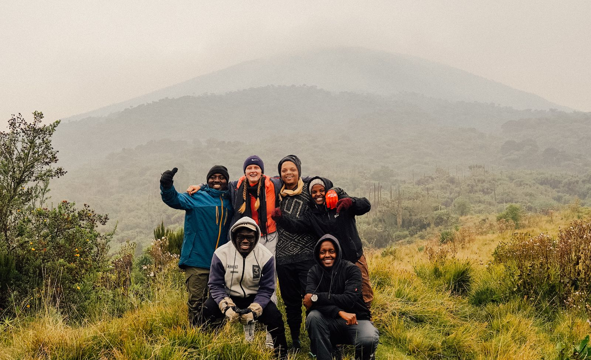

Travels & Writing
Processing changing contexts, understanding new cultures, and observing the self in transit.
Moving between New Zealand, Greenland, and Rwanda has fundamentally shaped how I understand belonging and displacement. My writing isn't a standard travel blog. It's a space for reflection on what it means to arrive somewhere entirely new, the uncomfortable gradualness of becoming familiar with a place, and the identity shifts that happen when you're perpetually between contexts. I write in both German and English, exploring how proximity to different cultures reveals not just how others live, but who you become when you step outside your own.

Selected Writings
I share deeper thoughts, observations, and long-form essays across two platforms: